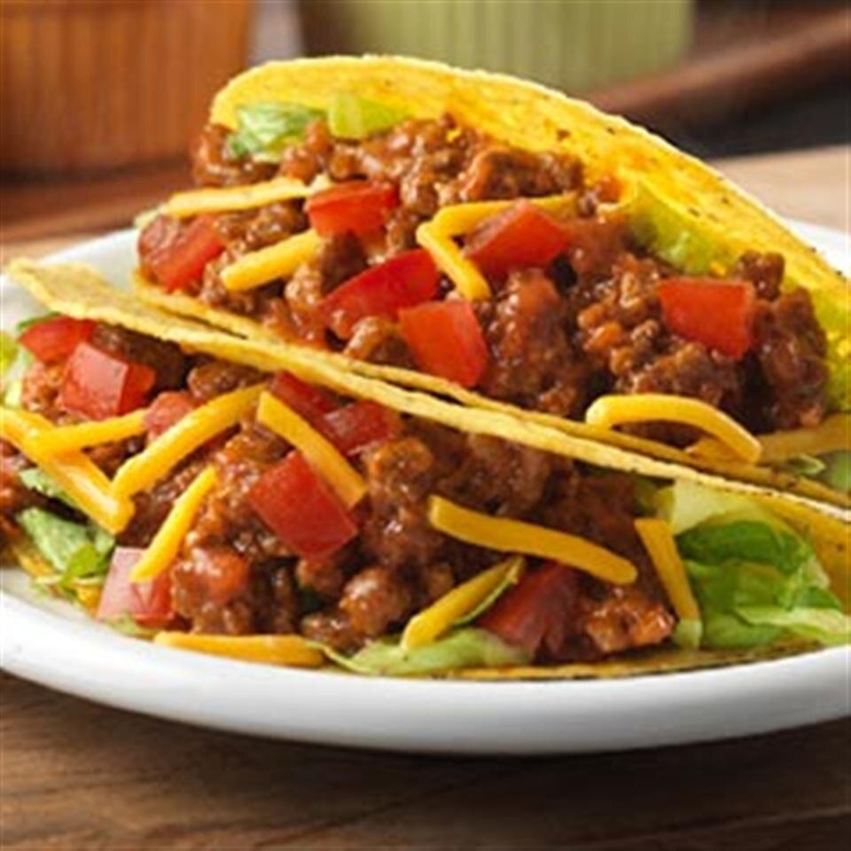

Tacos

A fast and easy way to make delicious tacos with a zesty mexican tomato soup for the whole family. 5 minutes of prep time, 15 minutes to cook, total of 20 minutes. Serves 6.
- 2 pounds ground beef
- 1 (14.5 oz) carton Campbell's Mexican Style Tomato Soup
- 12 warmed taco shells
- 3/4 cup shredded lettuce
- 1/3 cup shredded cheddar cheese
- 3/4 cup diced tomato
- Cook the beef in a 12-in. skillet over medium-high heat until beef is well-browned, stirring often and breaking up meat.
Pour off any fat. Season with salt and black pepper.
- Stir the soup in the skillet and heat to a boil. Reduce heat to low. Cook for 5 minutes or until soup is reduced, stirring often.
- Divide the beef mixture among the taco shells. Top with the lettuce, tomato, and cheese.
Return to Home